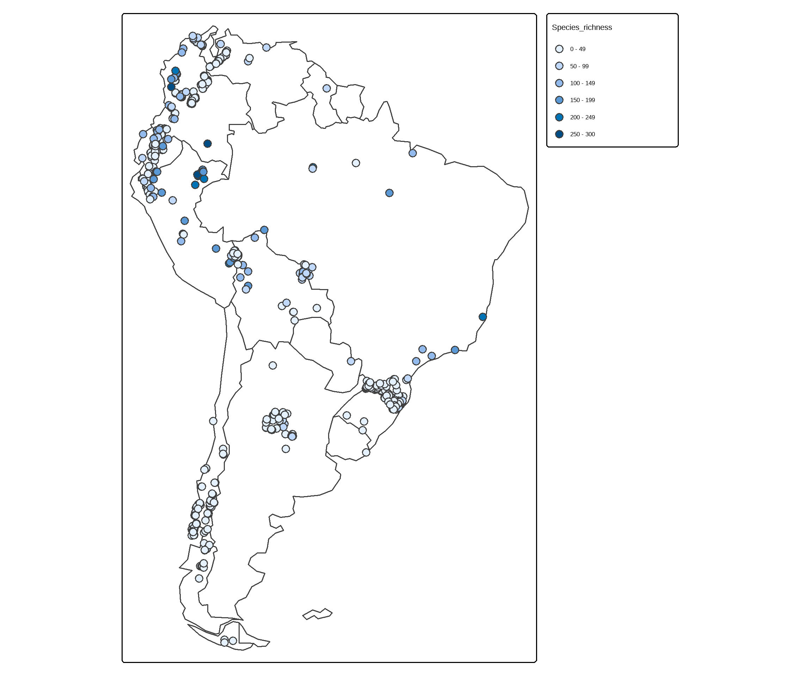
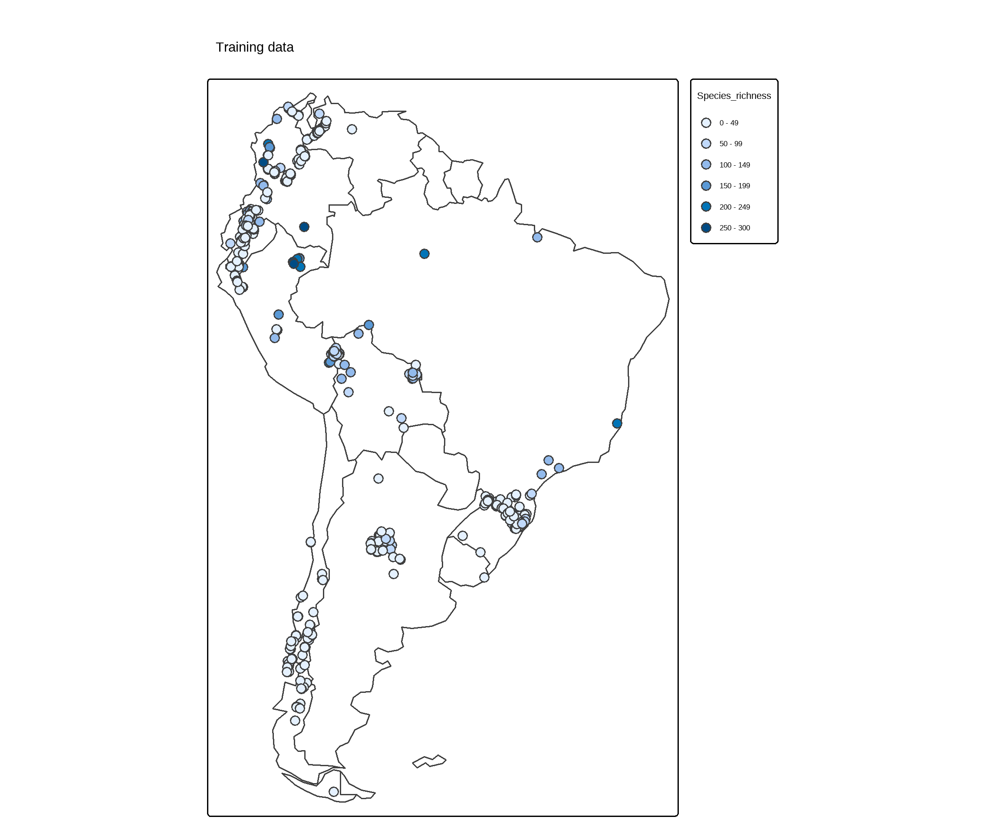
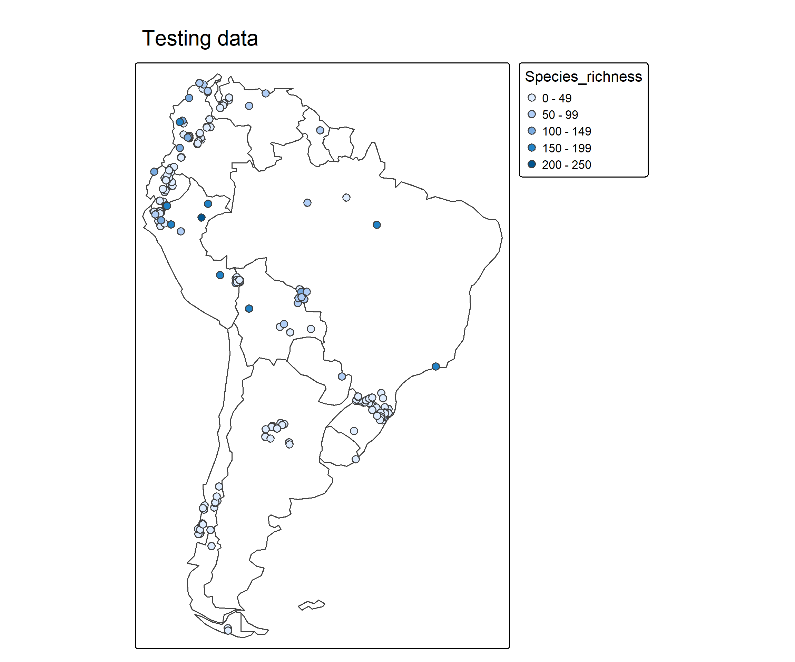
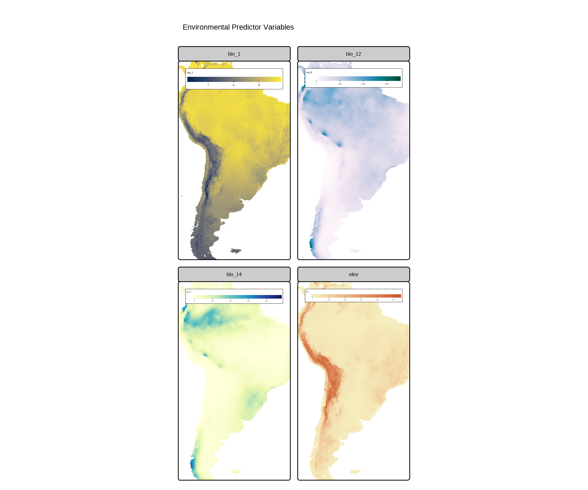
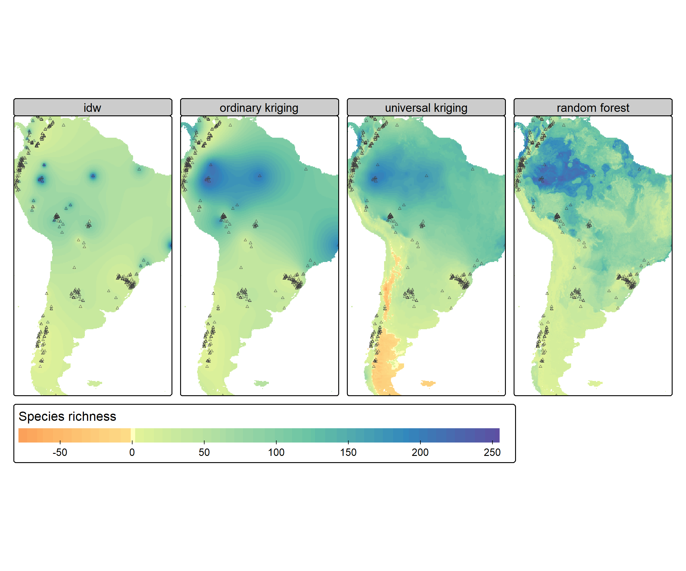
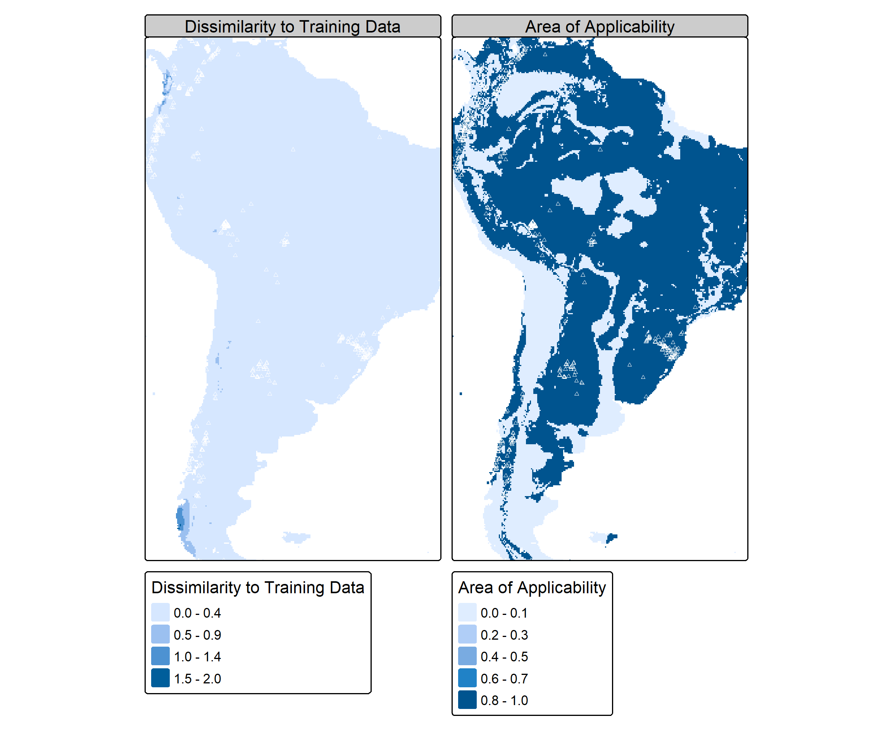
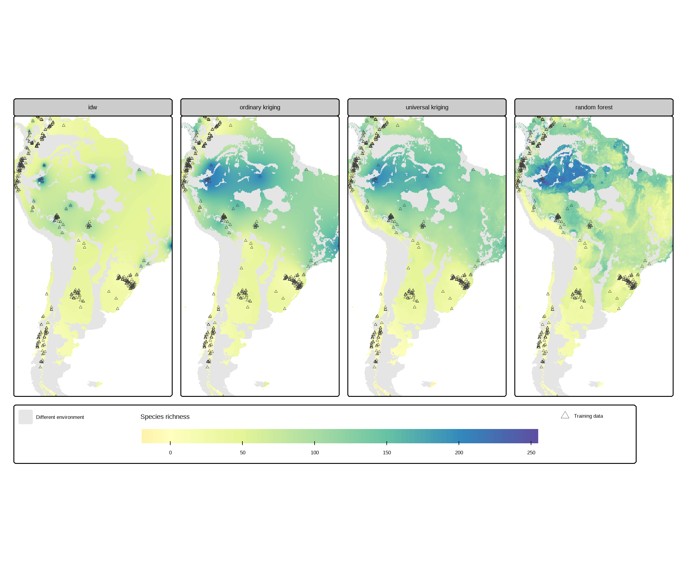
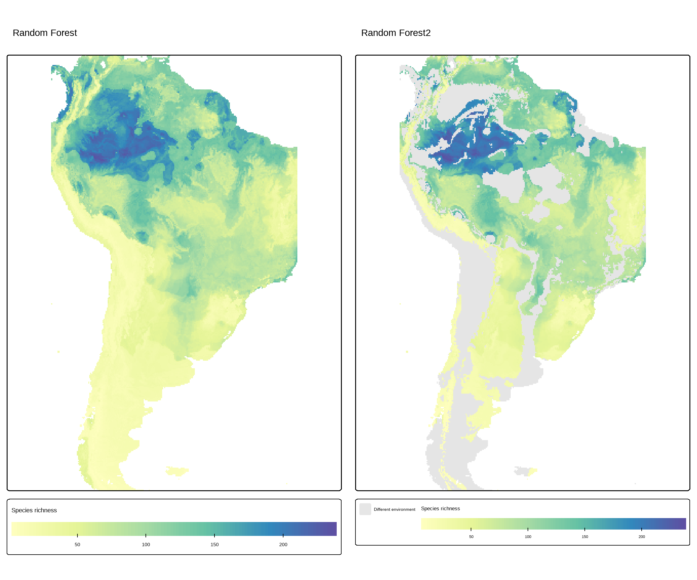
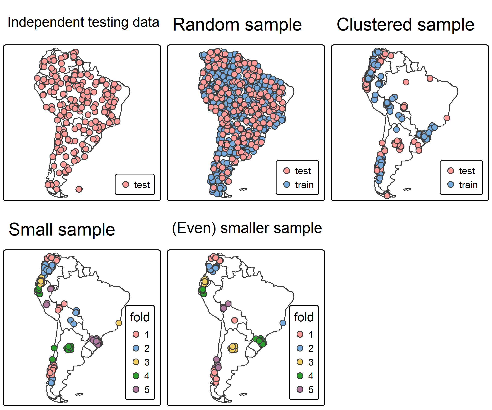

13 Introduction to Geostatistics
13.1 Introduction
Geostatistics is a branch of spatial statistics concerned with the analysis and prediction of phenomena that vary across geographic space. It is based on the principle of spatial autocorrelation, which states that locations closer together tend to exhibit more similar values than locations farther apart. Geostatistics provides methods for describing, modeling, and quantifying spatial patterns in environmental, ecological, geological, forestry, and climate data. Common applications include mapping soil properties, species richness, forest productivity, mineral deposits, precipitation, and environmental contaminants. A key feature of geostatistics is its ability to account for both the spatial location of observations and the uncertainty associated with predictions.
Geostatistical models are mathematical representations that describe the spatial dependence structure of a variable. These models typically consist of a deterministic component, known as the trend, and a stochastic component that captures spatially correlated variation. The spatial dependence is commonly characterized using a variogram or semivariogram, which measures how similarity between observations changes with distance. Parameters such as the nugget, sill, and range quantify measurement error, total variance, and the distance over which spatial correlation exists. By modeling this spatial structure, geostatistical methods can exploit information from nearby observations to improve prediction accuracy.
A good explainer is found here
13.2 Geostatistical Modelling
The following demonstrates a complete spatial prediction and model evaluation workflow for estimating species richness across South America using both classical geostatistical methods and modern machine learning approaches. Species richness is a measure of biodiversity that represents the number of different species present within a defined area, community, or ecosystem. It is one of the simplest and most widely used indicators of biological diversity, with higher species richness indicating a greater variety of species within the study area.
For example, a forest containing 120 plant species has greater species richness than a forest containing 80 plant species, regardless of the abundance of individual species. Species richness considers only the count of species and does not account for their relative abundance or distribution within the community.
The analysis begins by loading spatial, statistical, machine-learning, and cartographic libraries, including sf, terra, CAST, caret, and tmap. Species richness observations from the splotdata dataset are mapped across the South American continent, and the data are randomly split into training (70%) and testing (30%) subsets. This separation allows models to be calibrated using one portion of the data and independently evaluated using observations not used during model fitting. The script then downloads environmental predictor variables from WorldClim and global elevation datasets, including annual mean temperature (bio_1), annual precipitation (bio_12), precipitation of the driest month (bio_14), and elevation. These raster layers form the environmental predictor space used for subsequent interpolation and prediction.
The splotdata dataset is an example dataset included in the CAST package that contains plant species richness observations from the sPlotOpen global vegetation database for locations across South America. It is provided as an sf (simple features) spatial point object with 703 observations and 17 variables, including species richness, geographic coordinates, country information, biome classification, and environmental predictor variables.
Code

Code
set.seed(21)
train_indices = sample(1:nrow(splotdata), size = 0.7 * nrow(splotdata))
splotdata_test = splotdata[-train_indices, ]
splotdata = splotdata[train_indices, ]
tm_shape(south_america) +
tm_borders() +
tm_shape(splotdata) +
tm_symbols(fill = "Species_richness", size = 0.5) +
tm_title("Training data")
Code

The second stage focuses on developing and comparing several spatial prediction methods. First, an Inverse Distance Weighting (IDW) model is constructed using the observation coordinates, producing predictions based solely on the proximity of neighboring sample locations. Inverse Distance Weighting (IDW) is a deterministic spatial interpolation method used to estimate values at unsampled locations based on the values observed at nearby sample points. The technique assumes that locations closer together are more similar than locations farther apart, so nearby observations are assigned greater influence in the prediction than distant observations. IDW calculates predicted values as a weighted average of surrounding observations, where the weights are inversely proportional to distance, typically raised to a specified power parameter that controls how quickly influence decreases with distance. Unlike kriging, IDW does not model spatial autocorrelation through a variogram and does not provide measures of prediction uncertainty; instead, it relies solely on the spatial arrangement and proximity of observations. Because of its simplicity, computational efficiency, and intuitive interpretation, IDW is widely used in environmental science, ecology, forestry, hydrology, and geographic information systems (GIS) to create continuous surfaces from discrete point observations.
Next, an Ordinary Kriging model is developed by calculating an empirical variogram, fitting an exponential variogram model, and using the resulting spatial autocorrelation structure to interpolate species richness.
An empirical variogram is a graphical and statistical tool used in spatial analysis to quantify how similarity between observations changes with distance. It is calculated by measuring the average squared difference between pairs of sample values separated by various lag distances, then plotting half of this average variance (the semivariance) against distance. The resulting curve reveals the spatial dependence structure of the data: nearby locations typically have lower semivariance because they are more similar, while distant locations tend to have higher semivariance. Key features of an empirical variogram include the nugget (variation at very small distances or measurement error), the sill (the maximum semivariance reached), and the range (the distance beyond which observations are no longer spatially correlated). Empirical variograms are fundamental in geostatistics and are commonly used to model spatial autocorrelation and support interpolation methods such as kriging.
Ordinary Kriging is a geostatistical interpolation method that predicts values at unsampled locations by exploiting the spatial autocorrelation among observed data points. It assumes that the variable being modeled has a constant but unknown mean across the study area and uses a fitted variogram to quantify how similarity between observations changes with distance. Based on this spatial dependence structure, Ordinary Kriging assigns statistically optimized weights to neighboring observations, producing predictions that minimize estimation variance while remaining unbiased. Unlike simpler interpolation methods such as Inverse Distance Weighting (IDW), Ordinary Kriging explicitly models spatial correlation and provides both predicted values and measures of prediction uncertainty, making it one of the most widely used techniques in ecology, forestry, geology, hydrology, and environmental science for creating continuous spatial surfaces from discrete observations.
For Ordinary Kriging, two key assumptions are made about the spatial process being modeled: second-order stationarity (or intrinsic stationarity) and a stable covariance/variogram structure. The stationarity assumption means that the mean of the variable remains constant across the study area and that spatial dependence depends only on the separation distance and direction between locations, not on their absolute positions. In other words, if two points are 10 km apart, their expected degree of similarity is assumed to be the same regardless of where those points occur within the study area. The covariance structure assumption states that the spatial relationship among observations can be described by a valid covariance function or, equivalently, a variogram characterized by parameters such as the nugget (measurement error or microscale variability), range (distance beyond which observations are effectively uncorrelated), and sill (the total variance). Ordinary Kriging uses this fitted variogram to determine the optimal weights assigned to neighboring observations, producing unbiased predictions with minimum estimation variance. If strong trends, abrupt environmental gradients, or non-stationary processes exist across the landscape, these assumptions may be violated, in which case approaches such as Universal Kriging, spatial regression, or other non-stationary geostatistical models are often more appropriate.
The workflow then advances to Universal Kriging, which extends Ordinary Kriging by incorporating environmental predictors as explanatory variables while simultaneously modeling residual spatial autocorrelation. Unlike IDW, both kriging approaches explicitly model the spatial dependence among observations and provide statistically optimal predictions under specified assumptions regarding spatial stationarity and covariance structure.
13.2.1 Machine Learning
Finally the process implements a Random Forest Model. A Random Forest model is a supervised machine-learning algorithm that uses an ensemble of many decision trees to make predictions for either continuous variables (regression) or categorical variables (classification). During model construction, each tree is trained on a different random subset of the data, and at each tree split only a random subset of predictor variables is considered. This combination of bootstrap sampling and random variable selection reduces overfitting and improves the model’s ability to generalize to new data. For regression problems, such as predicting species richness, the final prediction is typically calculated as the average of the predictions from all individual trees in the forest. Random Forest models are particularly effective for ecological and environmental applications because they can model complex, nonlinear relationships, automatically capture interactions among predictor variables, handle large numbers of predictors, and provide measures of variable importance that help identify the environmental factors most strongly influencing the response variable.
The Random Forest model is developed using the caret::train() function to predict plant species richness from a set of environmental predictor variables, including temperature (bio_1), precipitation (bio_12 and bio_14), and elevation (elev). The command set.seed(10) ensures that the model-building process is reproducible, meaning the same random samples and model results can be recreated in future runs. The model uses the Random Forest (method = “rf”) algorithm, an ensemble machine-learning technique that constructs multiple decision trees and combines their predictions to improve accuracy and reduce overfitting. Model tuning is controlled through mtry = 2, which specifies that two predictor variables are randomly selected for consideration at each split in a tree. The model is built using 50 trees (ntree = 50) and evaluated using 3-fold cross-validation (trainControl(method = “cv”, number = 3)), allowing model performance to be assessed on multiple subsets of the training data.
Cross-validation is a model evaluation technique used to assess how well a predictive model is likely to perform on new, unseen data. The method works by dividing the available dataset into multiple subsets, or folds, and repeatedly training the model on one portion of the data while testing it on the remaining portion. In k-fold cross-validation, the dataset is split into k groups, and each group serves as the testing set once while the remaining groups are used for training. The prediction errors from all iterations are then averaged to provide a more reliable estimate of model performance than a single train-test split. In spatial analyses, cross-validation is particularly important because it helps identify overfitting and evaluates the model’s ability to generalize across space. Advanced spatial methods such as k-Nearest Neighbour Distance Matching (kNNDM) extend traditional cross-validation by creating geographically representative training and testing sets, thereby producing performance estimates that more closely reflect real-world prediction scenarios and reducing the risk of overly optimistic accuracy assessments caused by spatial autocorrelation.**
Once the Random Forest model has been trained, it is applied to the environmental raster layers using terra::predict(). This step generates a continuous spatial prediction surface (pred_rf) of species richness across the entire study area, where each raster cell receives a predicted value based on its environmental characteristics. Unlike geostatistical approaches such as IDW and Kriging, Random Forest does not rely on assumptions about spatial autocorrelation or variogram models. Instead, it learns complex, potentially nonlinear relationships between species richness and environmental variables directly from the training data. The resulting raster can then be visualized, compared with other interpolation methods, and evaluated using independent test observations and performance metrics such as RMSE. This enables assessment of whether machine-learning approaches provide more accurate spatial predictions than traditional geostatistical methods for modeling biodiversity patterns across South America.
Code
dir.create("data")
wc = geodata::worldclim_global(var = "bio", res = 10, path = "data/")
wc = wc[[c(1, 12, 14)]]
elev = geodata::elevation_global(res = 10, path = "data/")
predictors = crop(c(wc, elev), st_bbox(splotdata))
names(predictors) = c("bio_1", "bio_12", "bio_14", "elev")
predictor_space = noNA(predictors, falseNA = TRUE)
splotdata_df = st_drop_geometry(splotdata)
splotdata_coord = as.data.frame(st_coordinates(splotdata))
names(splotdata_coord) = c("x", "y")
splotdata_df = cbind(splotdata_df, splotdata_coord)
library(gstat)
m_idw = gstat(
formula = Species_richness ~ 1,
locations = ~ x + y,
data = splotdata_df,
set = list(idp = 2)
)
pred_idw = interpolate(predictor_space, m_idw, index = 1, debug.level = 0)
pred_idw = mask(pred_idw, predictor_space)
names(pred_idw) = "idw"
vgm_ok = variogram(Species_richness ~ 1, locations = ~ x + y, data = splotdata_df)
fm_ok = fit.variogram(vgm_ok, model = vgm(model = "Exp", nugget = 500))
m_ok = gstat(
formula = Species_richness ~ 1,
locations = ~ x + y,
data = splotdata_df,
model = fm_ok
)
pred_ok = interpolate(predictor_space, m_ok, index = 1, debug.level = 0)
pred_ok = mask(pred_ok, predictor_space)
names(pred_ok) = "ordinary kriging"
vgm_uk = variogram(Species_richness ~ bio_1 + bio_12 + bio_14 + elev,
locations = ~ x + y, data = splotdata_df)
fm_uk = fit.variogram(vgm_uk, model = vgm(model = "Exp", nugget = 500))
m_uk = gstat(
formula = Species_richness ~ bio_1 + bio_12 + elev,
locations = ~ x + y,
data = splotdata_df,
model = fm_uk
)
pred_uk = interpolate(predictors, m_uk, index = 1, debug.level = 0)
pred_uk = mask(pred_uk, predictor_space)
names(pred_uk) = "universal kriging"
set.seed(10) # set seed to reproduce the model
model_rf = train(
splotdata_df[, names(predictors)],
splotdata_df$Species_richness,
method = "rf",
tuneGrid = data.frame("mtry" = 2),
importance = TRUE,
ntree = 50,
trControl = trainControl(method = "cv", number = 3, savePredictions = "final")
)
pred_rf = terra::predict(predictors, model_rf, na.rm = TRUE)
names(pred_rf) = "random forest"
###############################################################################
# AGGREGATE FIGURE SET FOR R MARKDOWN
# Environmental Predictors + Geostatistical Diagnostics + Prediction Models
###############################################################################
#library(tmap)
# ---------------------------------------------------------------------------
# FIGURE 1: Environmental Predictor Variables
# ---------------------------------------------------------------------------
predictor_panel <- tm_shape(predictors) +
tm_raster(
col.scale = list(
tm_scale_continuous(values = "cividis"),
tm_scale_continuous(values = "PuBuGn"),
tm_scale_continuous(values = "YlGnBu"),
tm_scale_continuous(values = "geyser")
),
col.legend = tm_legend(
orientation = "landscape"
)
) +
tm_facets(ncol = 2) +
tm_title("Environmental Predictor Variables")
predictor_panel
Code
# ---------------------------------------------------------------------------
# FIGURE 2: All Prediction Models Including Random Forest
# ---------------------------------------------------------------------------
#
pred_all <- c(
pred_idw,
pred_ok,
pred_uk,
pred_rf
)
prediction_panel2 <- tm_shape(pred_all) +
tm_raster(col.scale = tm_scale_continuous(values = "spectral",
midpoint = 0,
values.range = c(0.2, 1)),
col.legend = tm_legend(title = "Species richness",
orientation = "landscape"),
col.free = FALSE) +
tm_facets(ncol = 4) +
tm_shape(splotdata) +
tm_dots(shape = 2, size = 0.2, lwd = 0.3)
prediction_panel2
Code
###############################################################################
# MODEL PERFORMANCE EVALUATION (RMSE)
# Compare IDW, Ordinary Kriging, Universal Kriging, and Random Forest
###############################################################################
# RMSE function
rmse <- function(observed, predicted) {
sqrt(mean((observed - predicted)^2, na.rm = TRUE))
}
# IDW
pred_idw_test <- terra::extract(
pred_idw,
splotdata_test
)
rmse_idw <- rmse(
observed = splotdata_test$Species_richness,
predicted = pred_idw_test[, 2]
)
# Ordinary Kriging
pred_ok_test <- terra::extract(
pred_ok,
splotdata_test
)
rmse_ok <- rmse(
observed = splotdata_test$Species_richness,
predicted = pred_ok_test[, 2]
)
# Universal Kriging
pred_uk_test <- terra::extract(
pred_uk,
splotdata_test
)
rmse_uk <- rmse(
observed = splotdata_test$Species_richness,
predicted = pred_uk_test[, 2]
)
#Random Forest
pred_rf_test <- terra::extract(
pred_rf,
splotdata_test
)
rmse_rf <- rmse(
observed = splotdata_test$Species_richness,
predicted = pred_rf_test[, 2]
)
# ---------------------------------------------------------------------------
# Create RMSE summary table
# ---------------------------------------------------------------------------
rmse_results <- data.frame(
Method = c(
"IDW",
"Ordinary Kriging",
"Universal Kriging",
"Random Forest"
),
RMSE = round(
c(
rmse_idw,
rmse_ok,
rmse_uk,
rmse_rf
),
digits = 2
)
)
# Rank models from best (lowest RMSE) to worst
rmse_results <- rmse_results[
order(rmse_results$RMSE),
]
# Nicely formatted table for R Markdown
knitr::kable(
rmse_results,
caption = "Comparison of Species Richness Prediction Models Using RMSE"
)| Method | RMSE | |
|---|---|---|
| 2 | Ordinary Kriging | 24.92 |
| 3 | Universal Kriging | 27.11 |
| 4 | Random Forest | 27.42 |
| 1 | IDW | 30.86 |
The RMSE results indicate that Ordinary Kriging produced the most accurate predictions of species richness among the four models evaluated, with the lowest RMSE value of 24.92. Since RMSE measures the average magnitude of prediction errors between observed and predicted values, lower values indicate better predictive performance. Universal Kriging (RMSE = 27.11) and Random Forest (RMSE = 27.42) performed similarly, with only slightly larger prediction errors than Ordinary Kriging. In contrast, Inverse Distance Weighting (IDW) had the highest RMSE (30.86), indicating the poorest predictive accuracy of the methods tested. These results suggest that the spatial autocorrelation structure captured by Ordinary Kriging provided the most useful information for predicting plant species richness in this dataset, while the addition of environmental covariates in Universal Kriging and the nonlinear relationships modeled by Random Forest did not substantially improve prediction accuracy. Overall, the findings demonstrate that geostatistical approaches, particularly Ordinary Kriging, were better suited to this species richness dataset than the simpler distance-based IDW interpolation method.
13.2.2 Area of Applicability
The Area of Applicability (AOA) analysis evaluates whether the conditions at prediction locations are adequately represented by the conditions observed in the training dataset. The aoa() function uses the predictor rasters (bio_1, bio_12, bio_14, and elev) together with the predictor values extracted from the training observations to quantify how similar or dissimilar each prediction location is to the environments used for model calibration. The first map displays the Dissimilarity Index (DI), where each raster cell receives a value representing its environmental distance from the training data. Low DI values indicate locations with environmental conditions similar to those represented in the training dataset, whereas high DI values identify areas that differ substantially from the environments used to develop the predictive models. The overlaid sample locations provide a spatial reference showing where field observations are concentrated relative to the environmental gradients in the study area.
Code
AOA = aoa(predictors,
train = splotdata_df[c("bio_1", "bio_12", "bio_14", "elev")],
verbose = FALSE)
# Combine the two AOA outputs
aoa_panel <- c(
AOA$DI,
AOA$AOA
)
names(aoa_panel) <- c(
"Dissimilarity to Training Data",
"Area of Applicability"
)
panel<-tm_shape(aoa_panel) +
tm_raster() +
tm_facets(ncol = 2) +
tm_shape(splotdata) +
tm_dots(
shape = 2,
col = "white",
size = 0.2,
lwd = 0.3
)
panel
The second map displays the Area of Applicability (AOA), which is derived from the Dissimilarity Index. The AOA classifies prediction locations into areas where model predictions are considered reliable and areas where predictions should be interpreted with caution. Locations inside the AOA have environmental conditions that fall within the range represented by the training data, meaning that model predictions are based on interpolation within known environmental space. In contrast, locations outside the AOA represent environmental conditions that were not observed during model training and therefore require extrapolation. Because predictive models generally perform best when making predictions within the environmental conditions on which they were trained, the AOA provides an important measure of prediction reliability and model transferability (0.8 – 1.0 (darkest blue): High applicability; environmental conditions are well represented by the training observations).
The final section combines the AOA results with the species richness prediction surfaces generated by the four modeling approaches (IDW, Ordinary Kriging, Universal Kriging, and Random Forest). The command mask(pred_all, AOA[[3]], maskvalues = 0) removes predictions outside the Area of Applicability, leaving only those predictions that occur within environmentally supported regions. Areas outside the AOA are displayed as translucent background regions labeled as “Different environment,” highlighting locations where model extrapolation would occur. The resulting map panel allows direct comparison of the four prediction methods while simultaneously identifying areas where predictions are supported by the training data. This approach improves the interpretation of model outputs by distinguishing between predictions that are environmentally well-supported and those that may be associated with greater uncertainty due to novel or underrepresented environmental conditions.
Code
pred_all_aoa = mask(pred_all, AOA[[3]], maskvalues = 0)
prediction_panel3<-tm_shape(predictor_space) +
tm_raster(col.scale = tm_scale(values = "black",
labels = "Different environment"),
col.legend = tm_legend(title = ""),
col_alpha = 0.1) +
tm_add_legend(labels = "Training data", fill = "black",
type = "symbols", shape = 2, size = 1) +
tm_shape(pred_all_aoa) +
tm_raster(col.scale = tm_scale_continuous(values = "spectral",
midpoint = 0),
col.legend = tm_legend(title = "Species richness",
orientation = "landscape"),
col.free = FALSE) +
tm_facets(ncol = 4) +
tm_shape(splotdata) +
tm_dots(shape = 2, size = 0.2, lwd = 0.3)
prediction_panel3
13.2.3 Measures of Model Reliability
The final portion of the workflow examines model reliability and extrapolation risk using several advanced techniques from the CAST package. It focuses on evaluating model transferability, validating model performance under realistic spatial sampling conditions, and assessing prediction reliability beyond traditional random cross-validation. A key component of this analysis is the use of k-Nearest Neighbour Distance Matching (kNNDM), implemented through the knndm() function in the CAST package.
Unlike conventional random cross-validation, kNNDM creates folds that preserve the geographic distances between training and testing observations and prediction locations. By specifying dist_fun = “great_circle”, the procedure correctly accounts for the fact that the species richness observations and predictor rasters are stored in geographic coordinates (longitude and latitude). The resulting indices_knndm object contains geographically representative training and testing folds that can be used to evaluate how well a model is expected to perform when predicting into new locations. The accompanying geodist() analysis quantifies the similarity between the cross-validation folds and the prediction domain, allowing visualization of how representative the training data are relative to the broader study area.
Using the kNNDM folds, the Random Forest model is retrained with a more spatially realistic validation strategy. Rather than relying on standard random cross-validation, the trainControl() function uses the geographically stratified folds contained in indices_knndm$indx_train. This approach reduces the overly optimistic performance estimates that often arise when nearby locations are assigned to both the training and testing sets. The retrained model (model_rf2) is then applied to the environmental predictor rasters to generate a new species richness prediction surface (pred_rf2). The predictions are subsequently constrained using the Area of Applicability (AOA) mask developed earlier, preventing interpretation of predictions made in environmental conditions that are poorly represented in the training data. The resulting map therefore highlights species richness predictions that are both spatially informed and environmentally supported by the available observations.
The script then explores different sampling designs and their implications for model validation. Random samples of training and testing locations are generated throughout the predictor space using spatSample(), producing independent datasets for evaluating model performance. These maps illustrate how sample locations are distributed across South America and provide a visual comparison between training and testing observations. Such analyses are important because model accuracy and reliability are strongly influenced by the spatial arrangement of sample data. If training and testing observations are located too close together, model performance may appear unrealistically high due to spatial autocorrelation rather than true predictive ability. By comparing random sampling and spatially structured validation strategies, the workflow demonstrates how sampling design affects model assessment and prediction confidence.
The final portion investigates the behavior of kNNDM under different sample sizes and spatial configurations. First, a clustered sampling example is generated using the newer kNNDM partitioning approach, where observations are grouped into spatially coherent clusters and assigned to different folds. The workflow then examines progressively smaller datasets containing 143 and 80 observations, respectively. For each dataset, kNNDM creates spatially balanced cross-validation folds, which are visualized on maps of South America. These examples demonstrate how the number and distribution of observations influence fold formation, spatial representativeness, and ultimately model evaluation. Together, these analyses highlight the importance of considering both geographic and environmental representativeness when validating spatial prediction models and emphasize that robust model assessment requires more than simply dividing data into random training and testing subsets.
Code
###############################################################################
set.seed(11)
#indices_knndm = knndm(splotdata, predictors, k = 5)
indices_knndm <- knndm(
splotdata,
predictors,
k = 5,
dist_fun = "great_circle"
)
# plot(indices_knndm)
# indices_knndm2 = knndm(splotdata[, names(predictors)], predictors, k = 5, space = "feature")
# plot(indices_knndm2)
dist_knndm <- geodist(
x = splotdata,
modeldomain = predictors,
CVtest = indices_knndm$indx_test,
dist_fun = "great_circle"
)
# plot(dist_knndm) +
# scale_x_sqrt(labels = scales::label_number()) +
# ggtitle(
# "k-fold nearest-neighbour distance matching cross-validation"
# )
#####################################################################################3
# retrain model with knndm folds
model_rf2 = train(
splotdata_df[, names(predictors)],
splotdata_df$Species_richness,
method = "rf",
tuneGrid = data.frame("mtry" = 2),
importance = TRUE,
trControl = trainControl(
method = "cv",
index = indices_knndm$indx_train,
savePredictions = "final"
)
)
# Original Random Forest prediction
map_rf1<-tm_shape(pred_all[[4]]) +
tm_raster(col.scale = tm_scale_continuous(values = "spectral",
midpoint = 0),
col.legend = tm_legend(title = "Species richness",
orientation = "landscape",
position = tm_pos_out("center", "bottom"))) +
tm_title("Random Forest")
pred_rf2 = terra::predict(predictors, model_rf2, na.rm = TRUE)
names(pred_rf2) = "random forest2"
pred_rf2_aoa = mask(pred_rf2, AOA[[3]], maskvalues = 0)
map_rf2<-tm_shape(predictor_space) +
tm_raster(col.scale = tm_scale(values = "black",
labels = "Different environment"),
col.legend = tm_legend(title = ""),
col_alpha = 0.1) +
tm_shape(pred_rf2_aoa) +
tm_raster(col.scale = tm_scale_continuous(values = "spectral",
midpoint = 0),
col.legend = tm_legend(title = "Species richness",
orientation = "landscape",
position = tm_pos_out("center", "bottom"))) +
tm_title("Random Forest2")
# Create a side-by-side panel
tmap_arrange(
map_rf1,
map_rf2,
ncol = 2
)
Code
############################################################################set.seed(2025-11-02)
random_sample_train = spatSample(predictor_space, size = 490, method = "random",
na.rm = TRUE, exact = TRUE,
as.points = TRUE, replace = FALSE)
random_sample_test = spatSample(predictor_space, size = 200, method = "random",
na.rm = TRUE, exact = TRUE,
as.points = TRUE, replace = FALSE)
set.seed(2025-11-26)
random_sample_test_i = spatSample(predictor_space, size = 200, method = "random",
na.rm = TRUE, exact = TRUE,
as.points = TRUE, replace = FALSE)
random_sample_test_i$type = "test"
a<-tm_shape(south_america) +
tm_borders() +
tm_shape(random_sample_test_i) +
tm_symbols(size = 0.5,
fill = "type",
fill.legend = tm_legend(title = "",
position = tm_pos_in("right", "bottom"))) +
tm_title("Independent testing data") +
tm_layout(scale = 2)
random_sample_train$type = "train"
random_sample_test$type = "test"
random_sample = rbind(random_sample_train, random_sample_test)
b<-tm_shape(south_america) +
tm_borders() +
tm_shape(random_sample) +
tm_symbols(size = 0.5,
fill = "type",
fill.legend = tm_legend(title = "",
position = tm_pos_in("right", "bottom"))) +
tm_title("Random sample") +
tm_layout(scale = 2)
############################################
# pak::pak("JanLinnenbrink/CAST") # new feature: work-in-progress
splotdata2 = splotdata
knndm_folds <- CAST::knndm(
splotdata2,
modeldomain = predictors,
test_prop = 0.3,
test_tolerance = 0.1,
dist_fun = "great_circle"
)
#
# knndm_folds = CAST::knndm(splotdata2, modeldomain = predictors,
# prop_test = 0.3, tolerance = 0.1)
splotdata2$type = knndm_folds$clusters
c<-tm_shape(south_america) +
tm_borders() +
tm_shape(splotdata2) +
tm_symbols(size = 0.5,
fill = "type",
fill.legend = tm_legend(title = "",
position = tm_pos_in("right", "bottom"))) +
tm_title("Clustered sample") +
tm_layout(scale = 2)
set.seed(2025-11-02)
splotdata3 = splotdata[sample(1:nrow(splotdata), size = 143), ]
#########################################################
indices_knndm2 <- knndm(
splotdata3,
predictors,
k = 5,
dist_fun = "great_circle"
)
#indices_knndm2 = knndm(splotdata3, predictors, k = 5)
#############################################################
splotdata3$fold = as.factor(indices_knndm2$clusters)
d<-tm_shape(south_america) +
tm_borders() +
tm_shape(splotdata3) +
tm_symbols(size = 0.5,
fill = "fold",
fill.legend = tm_legend(position = tm_pos_in("right", "bottom"))) +
tm_title("Small sample") +
tm_layout(scale = 2)
set.seed(2025-11-02)
splotdata4 = splotdata[sample(1:nrow(splotdata), size = 80), ]
##############################################################
indices_knndm3 <- knndm(
splotdata4,
predictors,
k = 5,
dist_fun = "great_circle"
)
#indices_knndm3 = knndm(splotdata4, predictors, k = 5)
###############################################################
splotdata4$fold = as.factor(indices_knndm3$clusters)
e<-tm_shape(south_america) +
tm_borders() +
tm_shape(splotdata4) +
tm_symbols(size = 0.5,
fill = "fold",
fill.legend = tm_legend(position = tm_pos_in("right", "bottom"))) +
tm_title("(Even) smaller sample") +
tm_layout(scale = 2)
tmap_arrange(
a,b,c,d,e,
ncol = 3,
nrow = 2
)
13.3 Summary
This experiment demonstrates the value of geostatistical analysis as a framework for understanding, predicting, and validating spatial patterns in biodiversity. The workflow uses plant species richness observations and environmental predictors to develop multiple spatial prediction models, including Inverse Distance Weighting (IDW), Ordinary Kriging, Universal Kriging, and Random Forest. Geostatistical methods are particularly important because they explicitly account for spatial autocorrelation, the tendency for nearby locations to exhibit more similar ecological conditions than distant locations. Through variogram analysis and kriging interpolation, the script quantifies how species richness varies across space and uses this information to generate continuous prediction surfaces for unsampled areas. The comparison of IDW, Ordinary Kriging, Universal Kriging, and Random Forest demonstrates that understanding spatial structure is critical for accurate ecological prediction, with Ordinary Kriging producing the lowest RMSE and therefore the most accurate predictions in this study.
Beyond prediction, the workflow highlights the broader importance of geostatistics for assessing model reliability and uncertainty. Traditional interpolation methods alone cannot determine whether predictions are being made within environmental conditions represented by the training data. By incorporating CAST tools such as the Area of Applicability (AOA), geographic distance analyses, and k-Nearest Neighbour Distance Matching (kNNDM) cross-validation, the script evaluates how representative the training observations are of the broader landscape and identifies areas where extrapolation may reduce prediction reliability. These analyses demonstrate that robust spatial modeling requires not only accurate prediction but also an understanding of where and why predictions can be trusted. Collectively, the workflow illustrates how geostatistical analysis provides a rigorous framework for integrating spatial dependence, environmental gradients, model validation, and uncertainty assessment, making it an essential tool for biodiversity mapping, ecological forecasting, and evidence-based environmental decision-making.